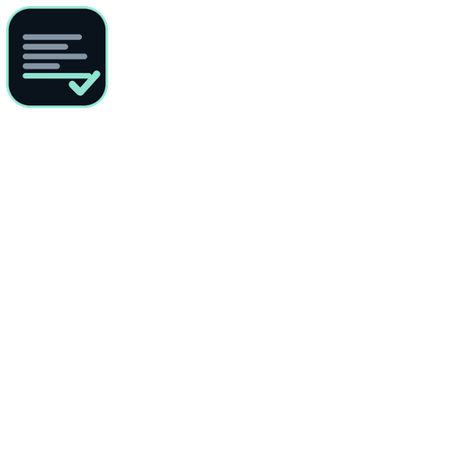

Static analysis of the artefact your users actually install — with every finding tied to a cryptographic evidence ID, and every limitation declared instead of hidden.
Target: draw.io Desktop v32.4.1 (Electron, 116 MB, GPL-3.0). Delivered in 48 h. The client received the report below — we publish it, with the evidence bundle, so you can judge the deliverable before talking to anyone.
Why “0 vulnerabilities” is the interesting part: the same report declares 10 limitations and registers 92,468 unknowns with re-queryable IDs — and names the run that hit its 1 GB / 300 s budget. Uncertainty is shipped as data, not hidden.
Download the artefact → verify its SHA-256 against the publisher's own hash file → analyse it statically (nothing is executed) → report with evidence IDs and declared limits. Reproduce it yourself:
rea analyze-javascript-application <artefact> --json
Fixed scope, fixed price, 48 hours: dependency and risk report for your Electron/JS app — SBOM with exact versions, Electron posture review (windows, IPC, preload bridge, embedded secrets), and a declared-limitations section. 150 USDT (TRC-20).
Terms & proforma